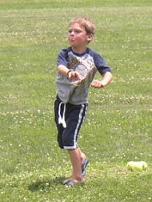
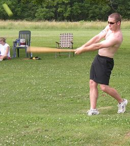
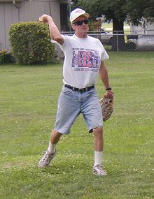
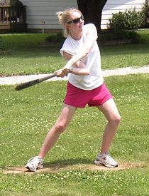
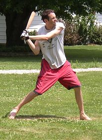
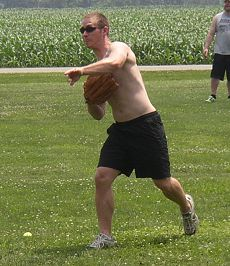
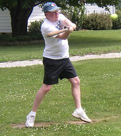
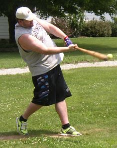
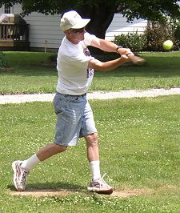

| |
|
|

Five-year old Caleb Cork threw out the ceremonial first pitch for the sixth
straight year prior to Saturday's season opener. |

Josh Williamson blasted three solo homeruns and went 4-for-12 in his first
game since 2007. |

Tony Cork picked up the win while striking out 13 on the day. He allowed
5 runs on 8 hits. |

Lauren Crawford became the first female player to start on opening day.
She also picked up her first career hit. |

Patrick Cork went 5-for-13 with 2 homeruns and 3 RBI. |

Josh Williamson suffered the loss allowing 7 runs on 14 hits. |

Brian Garrard went 3-for-14 and knocked in a pair of runs with a homerun
in his first game since 2006. |

Dustin Waldrop blasted a two-run homerun in his first game since the 2007
season while going 3-for-11. |

Tony Cork was 6-for-14 on the day with 2 RBI and 3 runs scored. |